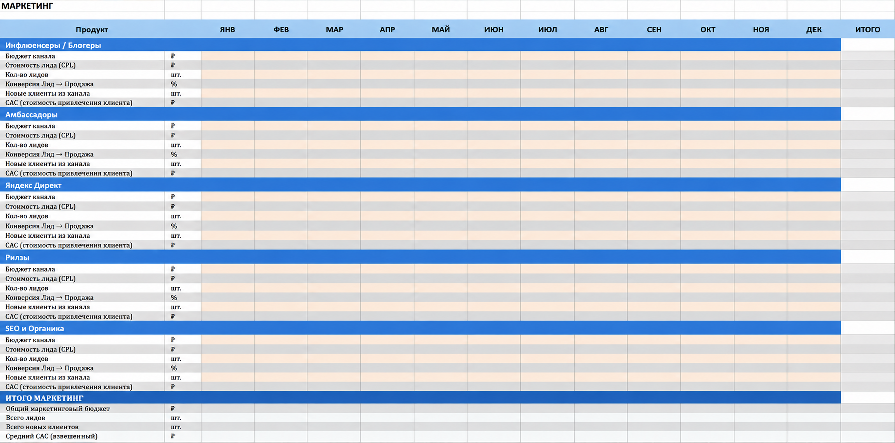
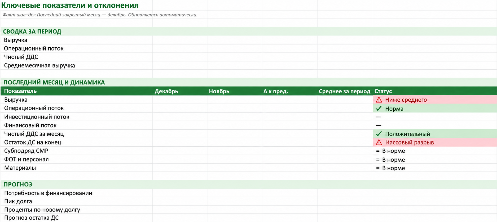
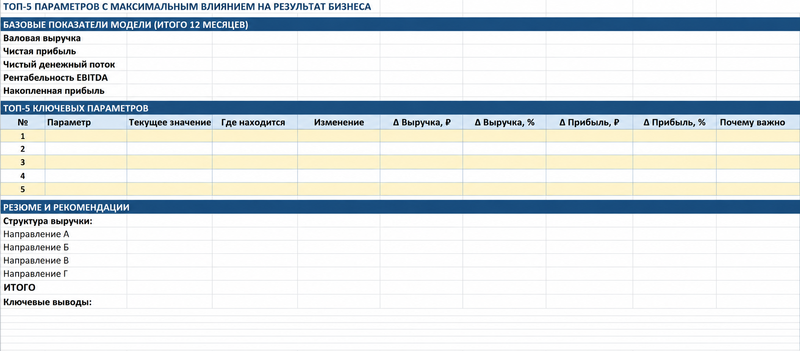

Бюджет и план-факт
Прогноз прибыли и убытков и движения денежных средств по периодам. Сопоставление плана с фактом и разбор отклонений.
ИИ в финансах · Моделирование, планирование, анализ
Разрабатываю модели для бюджетирования, управления денежными потоками и анализа прибыльности. Вместе с вашей командой проектирую процесс работы с данными, помогаю внедрить модель и обучаю ею пользоваться.
Что получает компания
Состав модели определяем по вопросам, на которые она должна отвечать.
Прогноз прибыли и убытков и движения денежных средств по периодам. Сопоставление плана с фактом и разбор отклонений.
Доходы, затраты и прибыльность по продуктам или направлениям. Основа для обсуждения приоритетов и оптимизации затрат.
Как изменятся выручка, прибыль и денежные потоки при другом уровне инвестиций, конверсии или затрат.
Завершённые проекты
Финансовая методология, применение ИИ и работа с командой заказчика.
Средний бизнес · Заказчик — собственник
Составить бюджет, выстроить управление денежными потоками и понять прибыльность отдельных направлений. Рассмотреть варианты оптимизации затрат по сегментам.
Выстроила методологию модели с прогнозом отчёта о прибылях и убытках (ОПУ) и движения денежных средств (ДДС) по направлениям, с аналитикой план-факт по периодам. Также подготовила дэшборды. Работала с командой заказчика над внедрением и обучением.
Claude for Excel и GPT for Excel использовались при создании модели. Qwen в закрытом контуре встроен в отдельный операционный процесс сбора данных.
Стартап · Пять продуктов / направлений
Понять, какую выручку, прибыль и денежные потоки может дать каждое из пяти направлений при разных вложениях в маркетинг и показателях конверсии.
Полностью спроектировала модель ОПУ, баланса и ДДС по направлениям с использованием Claude for Excel. Связала финансовую модель с воронкой привлечения клиентов и помогла собрать сценарии с разными уровнями конверсии.
Команда получила возможность выбирать уровень инвестиций, определять показатели конверсии, при которых стоит изменить или закрыть направление, управлять затратами и видеть, где теряется прибыль.
Примеры модели и визуализации
Маркетинговые вводные в модели и примеры наглядного представления показателей.

Сохранена структура каналов и показателей. Числовые значения удалены.

Сводка показателей, динамика и прогноз финансирования.

Анализ чувствительности и структура выручки.
Иллюстрации из авторской презентации. Финансовые значения удалены.
Роль ИИ
Финансовую логику и управленческий смысл модели определяю я. ИИ применяется на конкретных этапах работы.
Claude for Excel и GPT for Excel помогали в разработке моделей в Excel. Расчёты, взаимосвязи и исходные допущения разбираются с командой заказчика.
В проекте действующего бизнеса Qwen использовался в закрытом контуре для отдельного процесса сбора данных. Это отдельный этап работы, со своими требованиями к среде и данным.
Как строится работа
Ориентир проекта — 2–3 месяца. Объём и график согласуем по задаче и готовности данных.
Определяем решения, которые должна поддерживать модель, состав направлений и доступную отчётность.
Согласуем финансовую методологию, детализацию, расчётную логику и процесс сбора данных.
Создаём модель, проверяем взаимосвязи и допущения, разбираем варианты развития на рабочих примерах.
Помогаю организовать работу с моделью и обучаю команду её использованию в планировании и анализе.
До начала проекта
Начать с задачи бизнеса
Расскажите о компании, направлениях, доступной отчётности и желаемом результате. Обсудим состав проекта и участие команды.